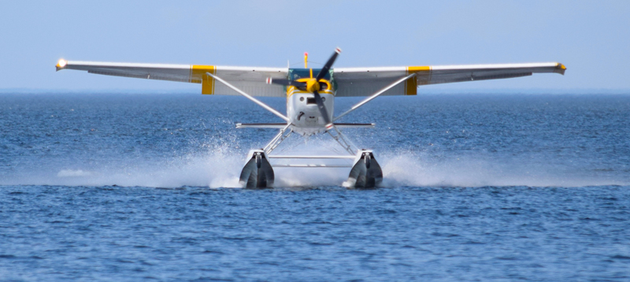
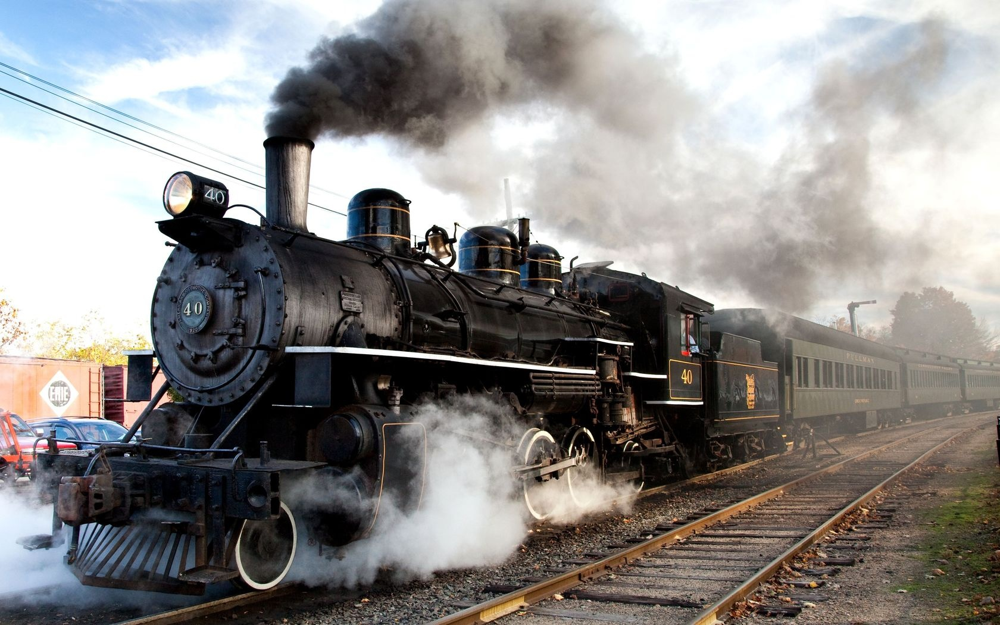

There are a few easy ways to get to Swan Island:
- Plane - a mere hour away from the Portland Airport, follow the signs and avoid falling rocks!

- Train - There is a steam train that runs up the mountain and drops off about 4 miles from the hotel. PLease contact Eric at Eric's Steam Trains for more cost information.

- Automobile - There is one road in and out of Swan Island, please be sure that you have off-roading tires equipped before attempting!

- Boat - by far the most thrilling way to arrive! Direct trip from Portland (about an hour, dress warm!)

Having trouble? Call Us!